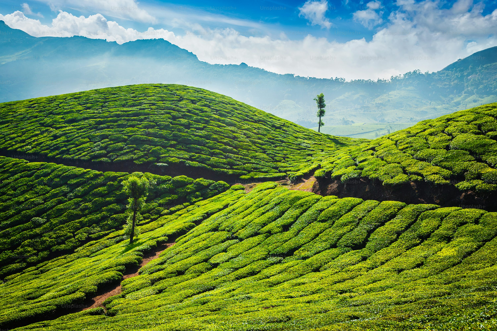
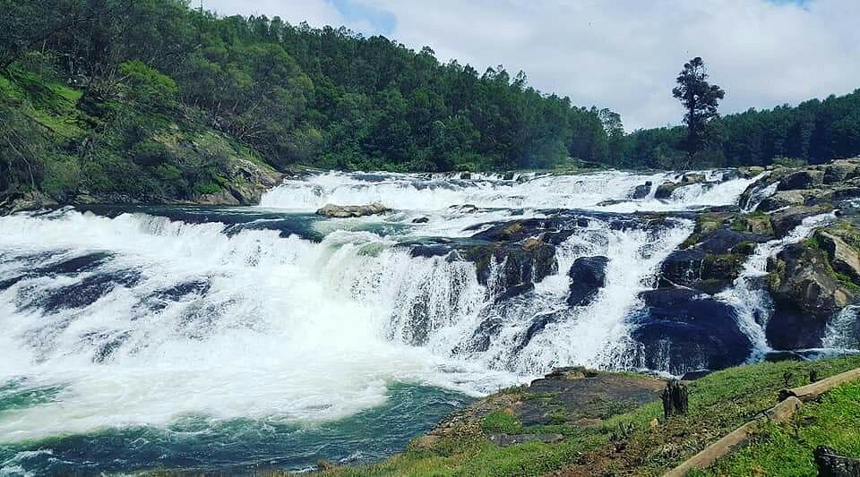

Nilgiris:
Hills & Beyond
Experience the magic of rolling green hills, pristine lakes, and lush tea gardens. The Nilgiris, the Queen of Hills, offers a perfect blend of serenity and adventure. Whether it's a peaceful boat ride on Ooty Lake or a trek through the breathtaking landscapes, your journey begins here.
Discover Nilgiris
Why Visit Nilgiris?
Nestled in the heart of the Western Ghats, the Nilgiris is a breathtaking retreat where nature unfolds in its purest form. This enchanting region is home to mist-covered mountains, sprawling tea gardens, and serene lakes that invite travelers to embrace a slower, more peaceful way of life. Whether you're wandering through the endless green tea estates of Kotagiri, gazing at the cascading beauty of Pykara Falls, or cruising on the tranquil waters of Ooty Lake, every moment in the Nilgiris feels like stepping into a dream.
Explore Nilgiris
Enchanting Destinations
Explore the breathtaking landscapes of the Nilgiris, where misty hills, lush tea estates, and serene lakes create a paradise for travelers. Experience nature’s beauty at its finest.
-

-
